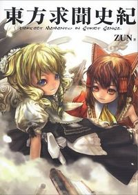

- Welcome to Touhou Wiki!
- Please register to edit. For assistance, check in with our Discord server or IRC channel.
Perfect Memento in Strict Sense
| 東方求聞史紀 Perfect Memento in Strict Sense | |
|---|---|
|
 | |
| Developer | |
| Publisher | |
| Released |
2006-12-27 |
| Genre |
Official Book |
| Writers | |
| Illustrators |
Aki★Eda |
| Pages |
166 |
| Comes with | |
| ISBN | |
Touhou
Perfect Memento comes with a CD containing three original music tracks plus some desktop wallpaper, and some shops also added a booklet drawn by Aki★Eda and written by ZUN. In addition, one month before release, a manga based upon it called Memorizable Gensokyo, also by Aki Eda and ZUN, was published in the December 2006 issue of Comic REX magazine.
Here, we see Gensokyo from the perspective of the (almost) normal human Hieda no Akyuu, a recorder of its history who lives in Gensokyo. Her descriptions show a quite different realm; one where things are described in terms of ‘threat levels’, and most Youkai are to be feared and avoided rather than laughed at. It deals primarily with the characteristics of the youkai as well as countermeasures that can be taken against them. However, everything recorded are only things within the range of Akyuu's knowledge.
Of note is that the youkai requested to Akyuu to describe them as being stronger than they actually are, thus many things may be grossly exaggerated. The descriptions also contain Akyuu's own monologues and considerations. Thus, one must be aware that they are prone to misconceptions, lack of proper research, or outright lies (not necessarily from Akyuu, but from her sources). However, despite how the contents are written by someone who is not omnipotent, it is still information from someone who sees it as her duty to properly record Gensokyo's history, thus there is likely at least some truth to most of it.
- Examples of Dubious or erroneous statements
- Sakuya Izayoi's past before serving Remilia Scarlet is complete speculation (Akyuu states this in her article).
- Eirin Yagokoro and Kaguya Houraisan have been categorized as human (while it is arguable whether Lunarians are human or not, the way their articles are written seems to indicate that Akyuu is completely unaware of their Lunarian descent).
- Fujiwara no Mokou is the descendant of a group of anti-youkai ninjas who live in the bamboo forest (she is not a ninja and there is a high possibility that she is not a descendant, but instead is the actual person that caused the legend of ninjas in the first place).
- The reason why ascending into Heaven nirvana is restricted is because Heaven is filled to capacity (in Scarlet Weather Rhapsody, Yukari Yakumo and Suika Ibuki eventually discovered that it was a big lie. There's plenty of room in Heaven, though it implies the Celestials are hogging more than their fair share.)
Despite what is stated above, it is still the best source for official and canonical information on the series, so one should not think everything in it cannot be trusted.
Contents[edit]
- pg. 1: Gensokyo Chronicle
- pg. 4-5: Foreword
- pg. 6: Table of Contents
- pg. 7: Youkai Encyclopedia
- pg. 8-9: Encyclopedia: Fairy (Fairy)
- pg. 10-11: Cirno
- pg. 12-13: Lily White
- pg. 14-15: Sunny Milk
- pg. 16-17: Luna Child
- pg. 18-19: Star Sapphire
- pg. 20-21: Encyclopedia: Phantom (Phantom)
- pg. 22-24: Youmu Konpaku
- pg. 25-26: Lunasa Prismriver
- pg. 27-28: Merlin Prismriver
- pg. 29-30: Lyrica Prismriver
- pg. 31-32: Encyclopedia: Youkai (Youkai, Presence)
- pg. 33-34: Rumia
- pg. 35-36: Letty Whiterock
- pg. 37-38: Wriggle Nightbug
- pg. 39-40: Mystia Lorelei
- pg. 41-42: Hong Meiling
- pg. 43-44: Medicine Melancholy
- pg. 45-47: Yuuka Kazami
- pg. 48-51: Yukari Yakumo
- pg. 52-53: Encyclopedia: Magician
- pg. 54-56: Alice Margatroid
- pg. 57-59: Patchouli Knowledge
- pg. 60-61: Encyclopedia: Beast Youkai (Nekomata, Kitsune, Rabbit)
- pg. 62-63: Chen
- pg. 64-65: Ran Yakumo
- pg. 66-68: Reisen Udongein Inaba
- pg. 69-70: Tewi Inaba
- pg. 71-72: Encyclopedia: Lycaony (Therianthropes)
- pg. 73-74: Keine Kamishirasawa
- pg. 75-76: Encyclopedia: Vampire (Vampire)
- pg. 77-79: Remilia Scarlet
- pg. 80-81: Flandre Scarlet
- pg. 82-83: Encyclopedia: Ghost (Ghost)
- pg. 84-86: Yuyuko Saigyouji
- pg. 87-88: Encyclopedia: Tengu (Tengu, Mountain Deity)
- pg. 89-91: Aya Shameimaru
- pg. 92-93: Encyclopedia: Oni (Oni, Elder Demon)
- pg. 94-95: Suika Ibuki
- pg. 96: Encyclopedia: Unidentified
- pg. 96-97: Dragon
- pg. 97-98: Kappa (Kappa)
- pg. 98-99: Celestial (Celestial)
- pg. 99-100: Hermit
- pg. 100-101: Yaoyorozu no Kami (Eight Million Gods) (Yaoyorozu no Kami)
- pg. 101-102: Divine Spirit (Shinrei)
- pg. 103: Encyclopedia: Shinigami (Death Gods)
- pg. 104-105: Komachi Onozuka
- pg. 106-107: Encyclopedia: Yama - King of Hell (Yama)
- pg. 108-109: Eiki Shiki, Yamaxanadu
- pg. 110: Encyclopedia: Outsider - Spirited-away Humans
- pg. 8-9: Encyclopedia: Fairy (Fairy)
- pg. 111: Heroic Legends
- pg. 112-116: Reimu Hakurei
- pg. 117-120: Marisa Kirisame
- pg. 121-124: Sakuya Izayoi
- pg. 125-127: Rinnosuke Morichika
- pg. 128-129: Eirin Yagokoro
- pg. 130-132: Kaguya Houraisan
- pg. 133-134: Fujiwara no Mokou
- pg. 135: Dangerous Area Guide
- pg. 136: Human Village
- pg. 137: Hakurei Shrine
- pg. 138: Rinnosuke's Store (Kourindou)
- pg. 139: Misty Lake
- pg. 140: Bamboo Forest of the Lost
- pg. 140: Forest of Magic
- pg. 141: Youkai Mountain
- pg. 141: Road of Liminality
- pg. 142: Sanzu River
- pg. 143: Garden of the Sun
- pg. 143: Giant Toad's Pond
- pg. 144: Nameless Hill
- pg. 144: Scarlet Devil Mansion (Koumakan)
- pg. 145: Netherworld
- pg. 146: Hakugyokurou
- pg. 146: Eientei (House of Eternity)
- pg. 147: Lunar Capital
- pg. 148: Road of Reconsideration
- pg. 148: Muenzuka (Muendzuka)
- pg. 149: Higan
- pg. 151-155: Monologue
- pg. 157: Unresolved Materials
- pg. 162: Colophon
- pg. 165: Afterword by ZUN
- pg. 166: Copyright page
Danger/Friendship Level Summary[edit]
| Danger Level | ||||||||
|---|---|---|---|---|---|---|---|---|
| H u m a n F r i e n d s h i p L e v e l |
Very Low | Low | Medium | High | Very High | Unknown | ||
| High | Lily White | Lunasa Prismriver Merlin Prismriver Lyrica Prismriver Alice Margatroid Keine Kamishirasawa |
Youmu Konpaku | Yuyuko Saigyouji | ||||
| Normal | Luna Child Star Sapphire Eiki Shiki, Yamaxanadu |
Cirno Sunny Milk Hong Meiling Tewi Inaba Komachi Onozuka |
Wriggle Nightbug Patchouli Knowledge Chen |
Ran Yakumo Aya Shameimaru |
Suika Ibuki | Yukari Yakumo Reisen Udongein Inaba | ||
| Low | Rumia Letty Whiterock |
|||||||
| Very Low |
Remilia Scarlet Flandre Scarlet |
|||||||
| Poor | Mystia Lorelei | Medicine Melancholy | ||||||
| Worst | Yuuka Kazami | |||||||
Other Information[edit]
The title "求聞史紀" and Akyuu's ability "求聞持" comes from a so-called mantra "虚空蔵求聞持法" (Kokuuzou Gumonji Hou), which is popular in Japan as part of Shingon Buddhism, brought into Japan by Kuukai, one of the most famous Japanese Buddhists. The prayer is for Akasagarbha (虚空蔵菩薩, Kokuuzou Bosatsu) to improve their memory retention. This suits Akyuu's ability to remember everything she sees. [1]
Full Cover

Inside Cover